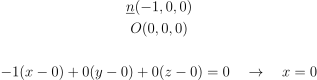
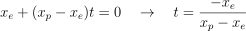

<html><head>
  <meta charset="utf-8">
  <title>Teoria</title>
  <link rel="stylesheet" href="home.css">
</head>

<body id="main_body">
  <div id="topnav">
    <span id="topnav_span">
      <a class="topnav_el" href="home.html">Home</a>
      <a class="topnav_el" href="#">Teoria</a>
      <a class="topnav_el" href="manuale.html">Manuale</a>
      <a class="topnav_el" href="progetto.html">Progetto</a>
    </span>
  </div>
  <div style="margin: auto; width: 800px">
    <header>Teoria</header>
    <h2>Proiezione</h2>
    <p>Per la realizzazione delle ombre cinesi è necessario proiettare il modello 3D della mano sullo schermo del palco, quindi ottenere una proiezione di un oggetto 3D su un piano.
	Gli elementi necessari per questo meccanismo sono
	<ul>
	<li>il punto E, punto di vista della proiezione</li>
	<li>piano di proiezione π, disgiunto dal punto E</li>
	<li>oggetto da proiettare, disgiunto dal punto E e dal piano π</li>
	</ul>
	L'ombra è il risultato della proiezione della mano a partire dalla luce nella scena. La luce stessa rappresenta il punto di vista della proiezione, quindi il punto E. Il piano π, invece, corrisponde allo schermo del palco, cioè la parete su cui verrà proiettata l'ombra. La mano, oggetto proiettato, è disgiunta da entrambi questi elementi e non ha punti in comune.
	La proiezione si ottiene individuando i punti di intersezione tra il piano di proiezione e le rette passanti per il punto E e i vertici dell'oggetto. In particolare, trattando un oggetto complesso, è necessario proiettare i singoli triangoli che compongono il modello della mano per ottenere un'ombra precisa.
	</p>
    <h2>Intersezione retta-piano</h2>
    <p>
	Dato un vertice P del poligono, la retta r passante per i punti P ed E è definita dalla seguente equazione
	<div style="text-align: center">
	
	</div>
	Il piano π è posizionato, per semplicità, ortogonalmente al vettore (-1,0,0) ed è passante per l'origine degli assi. La sua equazione è quindi
	<div style="text-align: center">
	
	</div>
	Per calcolare il punto di intersezione tra la retta r e il piano π è sufficiente calcolare il parametro t sostituendo i parametri della retta nell'equazione del piano
	<div style="text-align: center">
	
	</div>
	Trovato t è possibile sostituirlo nell'equazione della retta r per ottenere le coordinate del punto di intersezione.
	In alternativa è possibile calcolare la matrice M di proiezione e procedere tramite calcolo matriciale, ottendendo così le coordinate dell'intersezione a meno di un fattore di proporzionalità.
	<div style="text-align: center">
	
	</div>
	Ripetendo il procedimento per ogni vertice di ogni triangolo del modello si ottengono i punti della proiezione, cioè dell'ombra cercata.
	</p>
    <h2>Rototraslazioni</h2>
    <p>
	Con l'obiettivo di mettere a disposizione varie rappresentazioni di ombre è necessario applicare trasformazioni affini all'oggetto, in modo da poterlo traslare e ruotare.</br>
	Una trasformazione affine può essere descritta come
	<div style="text-align: center">
	
	</div>
	In questo caso è sufficiente applicare traslazioni e rotazioni agli oggetti coinvolti nella proiezione.
	Si ha una trasformazione di traslazione se A = I e c ≠ 0. c rappresenta il vettore di traslazione che sposta ogni punto P in P' tale che P' - P = c. La traslazione è una operazione commutativa ed è chiusa in quanto la composizione di più traslazioni è essa stessa una traslazione.
	<div style="text-align: center">
	
	</div>
	La rotazione è definita attorno agli assi locali dell'oggetto. Per ogni asse attorno al quale si deve ruotare si definisce un angolo di rotazione che viene applicato dalla matrice di rotazione che ruota l'oggetto su ogni asse indipendentemente.
	<div style="text-align: center">
	
	</div>
	La composizione di traslazioni e rotazioni permette l'orientamento corretto dell'oggetto in modo da ottenere diverse proiezioni, quindi ombre di diverse forme.
	</p>
  </div>
</body></html>